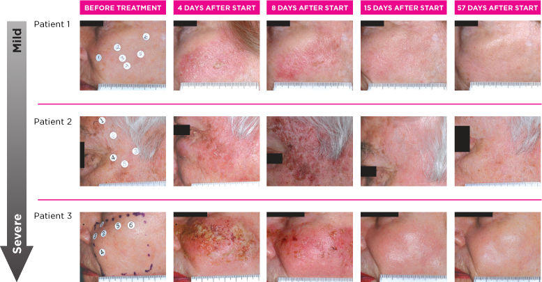

- My Experience Using Picato
- Pain Level
- How I Was Diagnosed With Actinic Keratosis
- My Frustration With Lack of Reliable “What To Expect” Sources
- Questions I Had During Use. With Answers
My Experience Using Picato
Each time I put on a dose of Picato, it felt like I went out and sat in the sun the entire day and got a moderate to severe sunburn on the treated area. Imagine this:
- Dose 1 - you get a bad sunburn.
- Dose 2 - your already badly burned skin gets another bad sunburn on top.
- Dose 3 - your now doubly badly burned skin gets a third bad sunburn on top.
That is the best way I can describe my first three days. It sounds bad, but hey, it beats skin cancer. After the last application you spend about 10 days healing from this “Picato Burn”. Below you can view chronoligic photos of my forehead throughout the 14-day experience.
Hour 0

Hour 12

Hour 36

Hour 60

Day 4
Day 5
Day 6
Day 7
Day 8
Day 9
Day 10
Day 11
Pain Level
I reached a pain level of 4/10 during the final application. Pain is worst during each ~ 6-hr period that the gel is on. Pain is comparable to a severe sunburn. I considered taking ibuprofen during the final appliation but ended up not taking any.
I believe having the treatment isolated to skin that was easy to keep still was helpful. Treating a crease or a part of the body you need to move would be more painful, I think.
How I Was Diagnosed With Actinic Keratosis
I’m 34 years old, blond hair, blue eyes - a high-risk candidate for sun damage. I love the outdoors and have spent a good chunk of my life doing things outside. I’ve been good about sunscreen (especially in my adult years) but I’ve also had my share of sunburns. Right around 33 years old I noticed some small red sometimes flaky / crusty spots on my forhead. Sometimes they itched. Some days they looked worse than others. They were different than acne, different than eczema. I wasn’t sure what they were. Here are some pics.


During my next annual dermatologist appointment, my dermatologist diagnosed them as mild, early-stage actinic keratosis, a pre-cancerous scaly growth caused by damage from exposure to ultraviolet (UV) radiation. After the appointment, I Googled some pictures of actinic keratosis and it was the first time I saw a picture that resembled the spots on my forehead.
My dermatologist recommended that I use Picato (ingenol mebutate) gel, 0.015%, to treat my actinic keratosis. .
My Frustration With Lack of Reliable “What To Expect” Sources
My dermatologist gave me the “Picato Quick Start Kit” pamphlet which includes some low-res pictures of what to expect:
OK. But surely Picato has carefully selected the images for their promotional pamphlet that will scare people the least; and the patient 3 “severe” reaction had me pretty scared. I wanted to learn how often this happens and if worse is possible.
When I Googled “Picato treatment”, images for Picato treatments were mixed in with images from other actinic keratosis treatments. It was hard to find Picato-specific images. I found one decent discussion of Pitaco with some images. In general, however, I was dissappointed with the lack of documentation on what to really expect. It was hard to find timelines other than the ones Picato provided. So I made this!
Questions I Had During Use. With Answers
Do I treat a large area or small isolated spots of damaged skin?
As soon as I applied the first dose and felt the burning on my enitre forehead, I thought “oh no! was I supposed to put it on my entire forehead?”. I could have sworn that is what my dermatologist said to do, but, for a moment, I doubted myself. After some Googling, I quickly learned that generally, yes, you treat a whole region; not individual spots. E.g., treat the entire forehead, not five separate 1 cm areas on the forehead. The idea is that you most likeley have some other damaged skin between so treat all of it.
I use aloe vera to help with a sunburn, should I use aloe vera to help with “Picato burn”?
My thought is there is at least a 12-hr period between washing off a dose of Picato and re-applying the next dose. Maybe I could put something on the treatment site in that period that can help? I called my dermatologist and she said no - do not put anything else on the site. The risk is that during treatament your skin is hyper sensative and “product x that is supposed to help me” may make things worse.
After I finish the last application and wash it off (around hour 72), is there something I can put on my skin to help with the healing process?
Some people on the web say they use Aquaphor. My dermatologist said not to. But I'm going to call her on Tuesday to inquire again.
Ugh, my skin looks horrible (hour 72). Is this going to heal well? This is my freaking face we’re talking about!
TBD
How Does Picato Work?
As of 2017.02.19, nobody knows how the ingenol (the active ingredient) kills all of the abnormal skin cells.